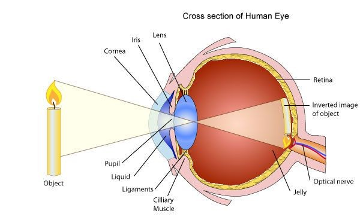
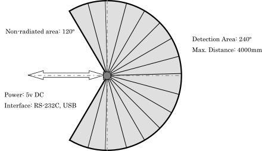
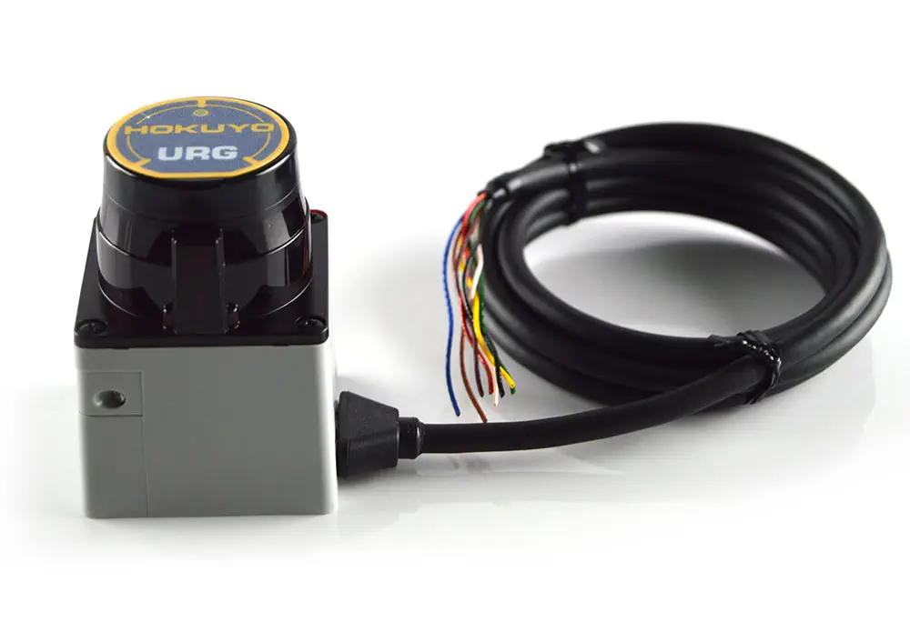
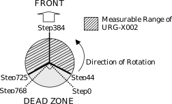
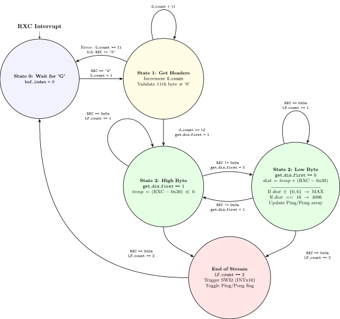

1. SE 423: Introduction to MechatronicsLecture 16: LiDAR CodeMarius Juston
Monday, March 23rd, 2026
2. Review – 5-minute partner discussion
Talk to the person next to you and answer these questions.
- Why did we use a ping pong buffer for the FFT code?
- Given that LiDAR splits its space as 360 degrees into 1024 steps, what is the angular resolution of the LiDAR?
- What happens if your angular resolution is too low and your object is far away?
- Is UART a synchronous or asynchronous communication protocol? What does it mean for it to be synchronous or not?
3. Reminders
Office Hours:
- Monday: 4-6 PM, Neel
- Tuesday: 11-1 PM, Lakshmi
- Tuesday: 1-3 PM, Samuel
- Tuesday: 2-5 PM, Dan & Marius
Lab: Starting Lab 6 this week. This a 3-week lab!
- Don’t forget to have the Lab LabVIEW application implemented before lab.
Homeworks:
- Check-offs for homework 3 Ex 5 are due March 24, 5PM (The end of office hours)
-
- This is a long homework, so DO NOT expect to work on and finish it during the Tuesday office hours time!
- Answers and code submissions for homework 3 are due March 25, 9AM
- Check-offs for homework 4 Ex 2 and 3 are due March 31, 5PM (The end of office hours)
4. Questions?
Homework, Lab, LabVIEW?
5. URG-04LX
6. LiDAR
- The LiDAR we are working with is called the URG-04LX
- RG-04LX is a laser sensor for area scanning. The light source of the sensor is infrared laser of wavelength 785nm with laser class 1 safety.
7. Laser Classes
8. LiDAR – Laser classes
- Laser radiation can cause three basic types of laser hazards: eye, skin and fire hazards.
- If a laser is not class 1 compliant, you should wear protective equipment when entering the danger zone: laser safety glasses for eye protection and special suits for skin protection.
| Lazer Class | Hazard Risk | Common Uses | Safe Use Considerations |
|---|---|---|---|
| Class 1 | None | Barcode scanners, DVD players (if you remember what a DVD is!) | Safe under all considerations. |
| Class 1M | None to low | Laser diodes, fiber communication systems, speed meters | Safe unless viewed with optical instruments |
| Class 2 | Low (unless stared into) | Laser points, alignment tools | Avoid direct eye exposure |
| Class 2M | Low to moderate | Projection laser (e.g. light shows) | Safe unless viewed with optical instruments |
| Class 3R/3B | Moderate to high | Laser scanners, 3D printers | Can damage the naked eye and skin |
| Class 4 | Very high | Cutting, marking welding, cleaning surgery | Requires protective eyewear and strict controls. |
9. LiDAR – Laser classes – Eye
- Of all the laser hazards, eye injuries are the most serious (unless you don’t mind being blind!).
- When light reaches the eye, the cornea and the lens act as amplifiers. They concentrate light onto the retina (the back of the eye) which, afterward, is processed by the brain as an image.
- Those three components of the human eye (cornea, lens and retina) are the most susceptible to damage from laser radiation.
- Almost all types of laser lights can harm your eyes, but the various components of the human eye react more strongly with some light wavelengths.

https://www.laserax.com/blog/laser-safety-laser-classes-explained
10. LiDAR – Laser classes – Eye
- Part of visible light is absorbed by the eyes before being amplified by the lens and cornea.
- But infrared light isn’t visible and isn’t absorbed by the eyes. Thus, is more dangerous than visible light.
- All this energy is spent burning a small area of the retina which causes blindness and severe eye damages. Photochemical damage is also possible for lights lower than 400 nm (in the ultraviolet range) and may cause cataracts (decreased vision).
- Protective eyewear like laser goggles protects you by absorbing dangerous light.
- Different goggles absorb different lights, so you need to wear the right goggles for your laser class.
https://www.laserax.com/blog/laser-safety-laser-classes-explained
11. LiDAR – Laser classes – Skin
- If you had the choice between putting your eyes or your hands on the stove, chances are you would put your hands. It’s easy to understand why skin hazards are less serious than eye hazards. But the risks of skin burns still deserve attention.
- Direct contact with the laser beam and specular (mirror-like) reflections can cause skin injuries. Those injuries are typically caused by thermal damage like touching the stove, or photochemical damage like sunburns.
- The burn level depends on the laser’s output power, the wavelength, the size of the affected area, and the duration of the irradiation.
12. LiDAR – Laser classes – Fire hazards
- Apart from health hazards, laser light can also start fires and put your work environment at risk.
- Only class 4 lasers pose real fire safety concerns. Their direct beam as well as any type of reflection can ignite combustible materials.
- For a safe integration, those lasers must be enclosed properly and account for all possible angles of reflection, including diffuse reflections.
Given that the URG-04LX is a class 1 laser. What precautions do we need to take when handling it?
Nothing, it is a class 1 laser!
13. URG-04LX
14. LiDAR
- Scan area is 240º semicircle with maximum distance of 4000mm.
- Pitch angle is 0.36º and sensor outputs the distance measured at every point (683 steps).
- Laser beam diameter is less than 20mm at 2000mm with maximum divergence 40mm at 4000mm.
- The principle of distance measurement is based on calculation of the phase difference, due to which it is possible to obtain stable measurement with minimum influence from object’s color and surface gloss.
-
- Essentially Time of Flight but with a continuous wave rather than the discrete pulse
15. LiDAR


https://www.robotshop.com/products/hokuyo-urg-04lx-laser-rangefinder
16. LiDAR
- There are 2 ways to communicate with the LiDAR sensor SCI (UART) or USB. We use SCI only.
- There are 4 types of commands that can be sent.
- Version Command (‘V’)
- Laser Illumination Command (‘L’)
- Communication Speed Setting command for RS-232C (‘S’)
- Distance Data Acquisition Command (‘G’)
17. LiDAR
- The SCI data packets are in the following format,
Host to Sensor:
Sensor to Host:
- Termination code is either Line Feed (‘\n’) or Carriage Return (‘\r’)
- The codes XX16 represents ASCII codes in hex
- Any status code other than ‘0’16 represents an error.
| Command | Parameter (if necessary) | LF (0a16) or CR (0d16) |
| Command | Parameter (if necessary) | LF | Status | LF | Data | LF | LF |
18. LiDAR – Version Info
- If we want to get the version information of the LiDAR we can use the version command. This can be done simply as sending,
- The command ‘V’
- Done as:
serial_sendSCIC(&SerialC, "V\n", 2);
19. LiDAR – Laser Illumination Control
- If we want to turn the LiDAR on or off, we can use the ‘L’ command to turn it on or off.
- By default, the sensor is switched on even if it was previously switched off
- Done as:
serial_sendSCIC(&SerialC, "L0\n", 3); // Turn LiDAR off
serial_sendSCIC(&SerialC, "L1\n", 3); // Turn LiDAR on
20. LiDAR – Communication Settings
The default baud rate of the sensor through SCI is 19.2 kbps. Though it can be changed to 57.6, 115.2, 250, 500 and 750 kbps by varying the settings.
Example :
- 57.6 Kpbs = “057600” (ASCII 6 Digits)
- 115.2 Kpbs = “115200” (ASCII 6 Digits)
What baud rate is being set here?
char S_command[19] = "S1152000124000\n";
uint16_t S_len = 19;
serial_sendSCIC(&SerialC, S_command, S_len);
The baud rate set here is, 115200
21. LiDAR – Distance Data Acquisition
- The maximum measurable distance of the sensor is 4095 mm with 1 mm resolution.
- Each data point is represented with 12 bits (0-4095 range).
- To represents the data points in ASCII format a simple encoding is implemented.
- The 12-bit data is separated into 6 bit (max value of 63) each and then have 3016 (‘0’) added to them.
Example:
1234 mm = 01001101001022
↓ separation
(0100112, 0100102) = (1316, 1216)
↓ Add 3016
(4316, 4216) = (‘C’, ‘D’)
To decode you just do the inverse, where you subtract 3016 and then merge using bitwise or and bit shifting. It follows the big-endian system. The most significant bits of the data are sent first (in this case ‘C’ then ‘D’).
22. LiDAR – Distance Data Acquisition
- The full range of the sensor is 240 degrees where it can send a maximum of 683. However, it has 768 configurable steps. To be able to specify the actual usable range that we want to observe we can set this in the ‘G’ command.
- To obtain the data, we need to assign the starting point, end point and cluster count.
- The sensor groups multiple neighboring points assigned by the cluster count.
- The minimum value from each group is supplied as distance data to the host
- Starting point (0-768): Point of the area from where the data reading starts.
- End Point (0-768): Point of the area where the data reading stops.
- Cluster Count (0-99): Number of neighboring points that are grouped as a cluster.
23. LiDAR – Distance Data Acquisition
char G_command[] = "G04472503\n"; //command for getting distance -120 to 120 degree
uint16_t G_len = 11;
serial_sendSCIC(&SerialC, G_command, G_len);
What is the starting point?
‘044’ = 44th step
What is the ending point?
‘725’ = 725th step
What is the cluster count?
‘03’ = group 3

24. LiDAR – Distance Data Acquisition
char G_command[] = "G04472503\n"; //command for getting distance -120 to 120 degree
uint16_t G_len = 11;
serial_sendSCIC(&SerialC, G_command, G_len);
How many datapoints are we expecting then based on the command?
25. LiDAR – Distance Data Acquisition
- Sensor measures the distance in the range 20 mm to 4095 mm. If the distance is less than 20 mm, we can encode an error into the distance measurement.
26. LiDAR – Distance Data Acquisition
- We implement the reading of the data as a state machine,

27. LiDAR – Distance Data Acquisition
if (read_ladar_state == 0) {//wait for the starting char 'G'
buf_index = 0;
if (RXCdata =='G') {
read_ladar_state = 1;
G_count = 1;
}
}
28. LiDAR – Distance Data Acquisition
else if (read_ladar_state == 1) {//get the headers
G_count += 1;//count the number of headers
//check the status code and if it is not '0', wait for the next packet
if (G_count == 11) {
if (RXCdata != '0') {
read_ladar_state = 0;
}
}
if (G_count >= 12) {//there are total 12 things before the data
read_ladar_state = 2;
get_dis_first = 1;
dis_index = 0;
}
}
29. LiDAR – Distance Data Acquisition
else if (read_ladar_state == 2) {//get actual data
if (RXCdata == 0x0a) { //check for line feed
LF_count += 1;
} else {
LF_count = 0;
if (get_dis_first == 1) {
tempscid = (RXCdata - 0x30) << 6;//first data is the top 6 bit of the distance reading
get_dis_first = 0;
} else if (get_dis_first == 0) {
// Continued to next slide
}
if (LF_count == 2) { //two consecutive line feed means the end of the current data stream
read_ladar_state = 0;
print_dis_index = dis_index;
PieCtrlRegs.PIEIFR12.bit.INTx10 = 1; // Manually cause the interrupt for the SWI2
LADARpingpong = 1-LADARpingpong;
}
}
30. LiDAR – Distance Data Acquisition
else if (get_dis_first == 0) {
distance = tempscid + (RXCdata - 0x30);//second data is the bottom 6 bit of the distance reading
if (distance == 0 || distance == 6) {//error code
distance = LADAR_MAX_READING; //set to the max reading
} else if (distance == 16) { //distance is 4096mm
distance = 4096;
}
if (LADARpingpong == 0) {
checkdist = distance*0.00328084;
if ((checkdist > 0.0) && (checkdist < 20.0)) {
ladar_data[dis_index].distance_ping = checkdist; // fill in the distance_ping array
} else {
numRCXerrors++;
ladar_data[dis_index].distance_ping = ladar_data[dis_index].distance_pong;
}
} else if (LADARpingpong == 1) {
checkdist = distance*0.00328084;
if ((checkdist >= 0.0) && (checkdist < 20.0)) {
ladar_data[dis_index].distance_pong = checkdist; // fill in the distance_ping array
} else {
numRCXerrors++;
ladar_data[dis_index].distance_pong = ladar_data[dis_index].distance_ping;
}
}
dis_index += 1;
get_dis_first = 1;
}
31. LiDAR – Distance Data Acquisition
- The sensor has a scanning speed of 100 msec / scan ( so 10 Hz ) and we want to communicate with at a baud rate of 115200.
- As such in the main function we do the initialization:
ConfigCpuTimer(&CpuTimer1, LAUNCHPAD_CPU_FREQUENCY, 100000); // 10 Hz timer
init_serialSCIC(&SerialC,19200); //remember that the initial baud rate is 19200!
char S_command[19] = "S1152000124000\n"; // this changes the baud rate to 115200
uint16_t S_len = 19;
serial_sendSCIC(&SerialC, S_command, S_len);
DELAY_US(1000000); // Delay letting LADAR change its Baud rate
init_serialSCIC(&SerialC,115200); // Use the new baud rate for communication
for (LADARi = 0; LADARi < 228; LADARi++) { // the angle each point will be at will be constant
ladar_data[LADARi].angle = ((3*LADARi+44)*0.3515625-135)*0.01745329; //0.017453292519943 is pi/180, multiplication is faster; 0.3515625 is 360/1024
}
32. LiDAR – Distance Data Acquisition
- We use CPU Timer 1 to call the SCI command for reading the LiDAR information
__interrupt void cpu_timer1_isr(void)
{
serial_sendSCIC(&SerialC, G_command, G_len);
CpuTimer1.InterruptCount++;
}
So, every 10Hz timer 1 sends the ‘G’ command to collect the new data into the lidar_data buffer.
33. LiDAR – Distance Data Acquisition
- Once we get all the information from the SCI interrupt it triggers a software interrupt
if (LF_count == 2) { //two consecutive line feed means the end of the current data stream
read_ladar_state = 0;
print_dis_index = dis_index;
PieCtrlRegs.PIEIFR12.bit.INTx10 = 1; // Manually cause the interrupt for the SWI2
LADARpingpong = 1-LADARpingpong;
}
- As a reminder a software interrupt is the lowest priority level and can be interrupted by any of the other interrupts of higher priority levels.
- The rows represent a group
- Each column a channel within that group
- When multiple interrupts are pending, the lowest-numbered channel from the lowest-numbered group is serviced first. Thus, the interrupts at the top left of the table are service first and the bottom right last.
34. LiDAR – Distance Data Acquisition
35. LiDAR – Distance Data Acquisition
In the LiDAR lab code, we will have 3 software interrupts:
Software interrupt 1, will have the highest priority, this is used for retrieving the data and sending the data to and from the RaspberryPI
Software interrupt 2, will have the middle priority, where we will perform the LiDAR position computation and the coordinate transformations based on the sensor’s location on the robot.
Software interrupt 3, will have the lowest priority, where anything else can be done
In this lecture we will only look at software interrupt 2.
36. LiDAR – Distance Data Acquisition
__interrupt void SWI2_MiddlePriority(void) // RAM_CORRECTABLE_ERROR
{
// Set interrupt priority:
volatile Uint16 TempPIEIER = PieCtrlRegs.PIEIER12.all;
IER |= M_INT12;
IER &= MINT12; // Set "global" priority
PieCtrlRegs.PIEIER12.all &= MG12_10; // Set "group" priority
PieCtrlRegs.PIEACK.all = 0xFFFF; // Enable PIE interrupts so that other interrupts can go in between
__asm(" NOP");
EINT;
if (LADARpingpong == 1) {
// LADARrightfront is the min of dist 52, 53, 54, 55, 56
for (LADARi = 52, LADARrightfront = 19; LADARi <= 56 ; LADARi++) { // 19 is greater than max feet
if (ladar_data[LADARi].distance_ping < LADARrightfront) {
LADARrightfront = ladar_data[LADARi].distance_ping;
}
}
// LADARfront is the min of dist 111, 112, 113, 114, 115
for (LADARi = 111, LADARfront = 19; LADARi <= 115 ; LADARi++) {
if (ladar_data[LADARi].distance_ping < LADARfront) {
LADARfront = ladar_data[LADARi].distance_ping;
}
}
// Do coordinate transformations here, done in the next slides
} else if (LADARpingpong == 0) { /** same for pong */ }
}
37. LiDAR – Distance Data Acquisition
We start with the coordinate transform to get the coordinate of the LiDAR in the real world based on the robot’s position and heading.
LADARxoffset = ROBOTps.x + (LADARps.x*cosf(ROBOTps.theta)-LADARps.y*sinf(ROBOTps.theta));
LADARyoffset = ROBOTps.y + (LADARps.x*sinf(ROBOTps.theta)+LADARps.y*cosf(ROBOTps.theta));
Now we can get the coordinates of the object in the global reference frame based on the distance returned from the LiDAR and the angle.
for (LADARi = 0; LADARi < 228; LADARi++) {
ladar_pts[LADARi].x = LADARxoffset + ladar_data[LADARi].distance_ping*cosf(ladar_data[LADARi].angle + ROBOTps.theta);
ladar_pts[LADARi].y = LADARyoffset + ladar_data[LADARi].distance_ping*sinf(ladar_data[LADARi].angle + ROBOTps.theta);
}
38. LiDAR – Distance Data Acquisition
The pose objects as simply defined as,
typedef struct
{
float x; //in feet
float y; //in feet
float theta; // in radians between -PI and PI. O radian is along the +x axis, PI/2 is the +y axis
} pose;
pose ROBOTps = {0,0,0}; //robot position, will be updated through your integration code
pose LADARps = {3.5/12.0,0,1}; // 3.5/12 for front mounting, theta is not used in this current code